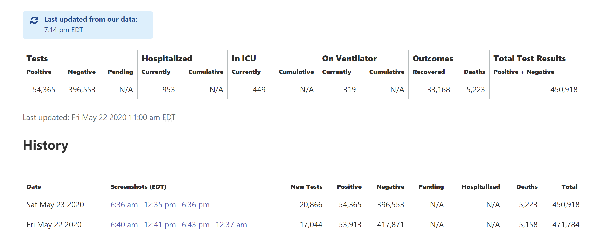

[MI historicals] negative tests for 5/23 because separation of antibody & PCR tests by state
Data is here MI-Historicals.txt Source: MI Lab Tests page

stale[bot] added the label stale on June 8, 2020 at 12:12 pm
stale[bot] commented on June 18, 2020 at 1:03 pm
This issue has been closed because it was stale for 15 days, and there was no further activity on it for 10 days. You can feel free to re-open it if the issue is important, and label it as “not stale.”
stale[bot] closed the issue on June 18, 2020 at 1:03 pm
muamichali removed the label stale on June 18, 2020 at 1:27 pm
muamichali reopened this on June 18, 2020 at 1:27 pm
stale[bot] commented on July 3, 2020 at 2:23 pm
This issue has been automatically marked as stale because it has not had recent activity. It will be closed if no further activity occurs. Thank you for your contributions!
stale[bot] added the label stale on July 3, 2020 at 2:23 pm
stale[bot] commented on July 13, 2020 at 2:41 pm
This issue has been closed because it was stale for 15 days, and there was no further activity on it for 10 days. You can feel free to re-open it if the issue is important, and label it as “not stale.”
stale[bot] closed the issue on July 13, 2020 at 2:41 pm
This issue has been automatically marked as stale because it has not had recent activity. It will be closed if no further activity occurs. Thank you for your contributions!